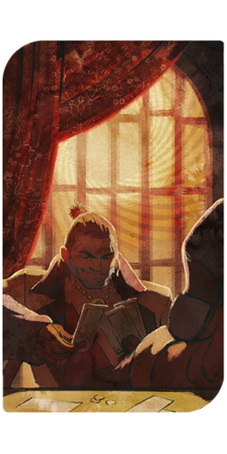

"It's just "scrappy" is better than "flawless." I like heroes who try their damnedest, even if they fail a lot. It's easy to be valiant when you always win and everything goes your way. There's nothing great in that.”" -Varric Tethras
Varric was an international best selling author known for his hit Hard in Hightown, he was a traveler and lover of misfits. Though he was seemingly unware of the popularity of his books. Despite also being involved with multiple world changing events.